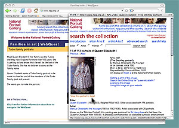

Navigating the webquest
In this webquest you can click on any portrait and open a new window giving you further information and a bigger image. Sometimes you will see the words view this portrait in detail below the image. If you click on this you will get another window with onscreen instructions and controls for you to enlarge the portrait and zoom around it.

Do you want to practise?
The Family of Sir Robert Vyner
by John Michael Wright
1673
NPG 5568
Click on the portrait of the Vyner family and find the names of the two children.
Then choose view this portrait in detail and see if their garden gate is open or closed.
Close pages by clicking the x in the top right-hand corner.
Clicking on many of the portraits in this webquest takes you straight to the zoom pages.
If you want to come back to the home page at any point, just click on the 'Families in art | WebQuest' title at the top of the page. Good luck and enjoy the webquest!